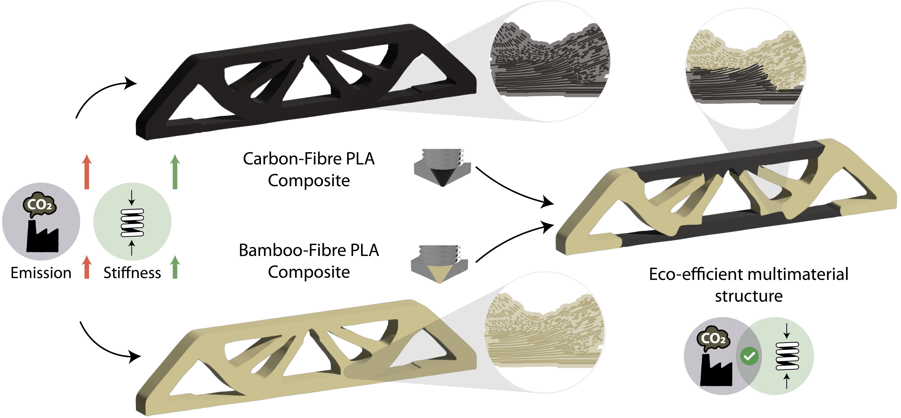

Reducing the CO₂ footprint of high-performance structures is a central engineering challenge. Carbon fibre composites offer outstanding stiffness-to-weight ratios but carry high embodied energy and large cradle-to-gate emissions. Bamboo composites, by contrast, are renewable and low-impact yet less stiff — making them ideal for low-stress regions of a structure.
We present a multimaterial topology optimisation framework that minimises cradle-to-gate CO₂ while meeting stiffness and volume constraints. Two density fields (carbon fibre and bamboo) and one fibre-orientation field are simultaneously optimised. Life-cycle assessment (LCA) data are embedded directly into the objective via a normalised CO₂ metric, allowing fair comparison across materials. The method uses UMMI-2 material interpolation, convolution and Heaviside projection filters, and MMA with adjoint sensitivities.
The optimised orientation field is converted to print-ready G-code through a Slith3r-based toolpath pipeline that generates distance-aware streamlines, segments them by material mask, and exports multimaterial commands. Printed MBB-beam specimens confirm the intended fibre directions and material distributions, and DIC strain maps agree closely with finite-element predictions — validating the end-to-end route from CO₂-aware optimisation to physical testing.
Two density fields (carbon fibre + bamboo) and one fibre-orientation field are simultaneously optimised to minimise cradle-to-gate CO₂ subject to stiffness and volume constraints.
The optimised orientation field is converted to multimaterial G-code via MM Eco Slith3r — fibre-aligned streamlines clipped by material mask and exported per material.
Specimens are printed on a multimaterial FFF printer and validated against FE predictions using digital image correlation (DIC).
All source code is openly available:
@article{amani2025ecomultimaterial,
author = {Amani, Muhamad and Asai, Gustavo and Jansari, Chintan and Luijten, Alex
and Agrawal, Tanuj and Lachaud, Fr{\'{e}}d{\'{e}}ric and Morlier, Joseph
and Masania, Kunal},
title = {Design and Three-Dimensional Printing of Eco-efficient Multimaterial Structures},
journal = {Additive Manufacturing},
year = {2025},
}